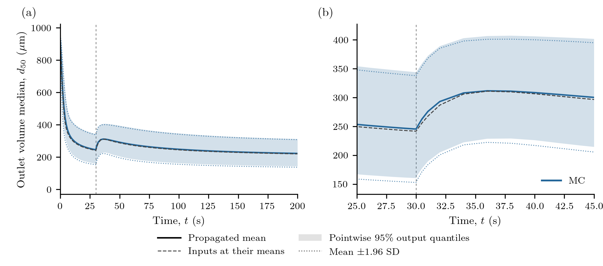
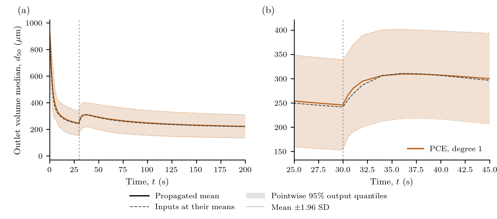
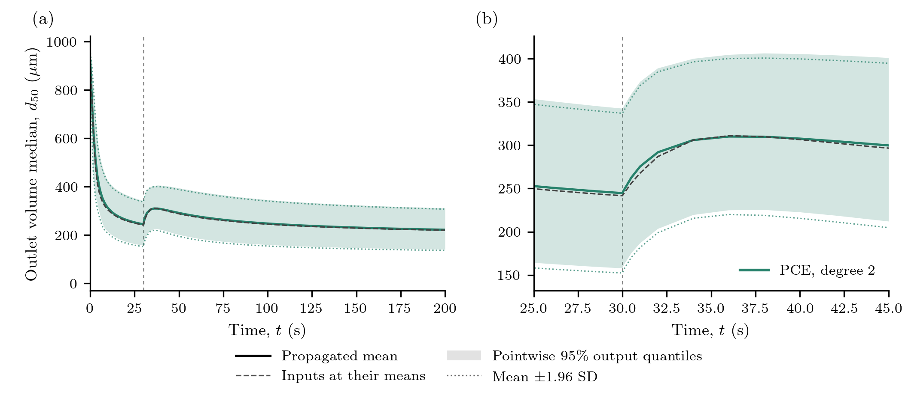

Uncertainty in continuous milling
A cone mill breaks incoming material until fragments can pass its screen. A change in impeller speed changes both the population held in the mill and the size of material leaving it. How uncertain is the predicted outlet median when the screen and breakage parameters are uncertain?
This calculation reconstructs the MC and polynomial-chaos examples in Bhonsale, Telen, Stokbroekx and Van Impe (2018), DOI 10.3390/pr6120255, Figures 4, 7 and 8. It is a forward-UQ calculation, without fitting or experimental observations. The printed model, parameter table and operating change are retained. Missing initialization/grid/statistic details and conflicting design/band descriptions prevent an exact replication; the choices below are explicit and are not tuned to match a curve. The package's existing protein calculations are unrelated.
Physical model and inventory basis
The internal coordinate is particle volume, v in m³. Here n(v,t) describes the whole-mill number inventory per particle-volume interval, not a slurry concentration. The population balance is
\[\frac{\partial n(v,t)}{\partial t} =F_{\mathrm{in}}(v)-F_{\mathrm{out}}(v,t) +\int_v^{\infty}b(v,y)S(y)n(y,t)\,dy-S(v)n(v,t).\]
The feed is a volume-weighted lognormal distribution, with median 4.81×10⁻⁵ m³ and log standard deviation 0.25, taken literally from Table 1. The mass feed is 7.4 g/s and particle density is 740 kg/m³. Exact feed-bin probabilities are converted to number flow by dividing each volume fraction by its pivot volume. The resolved feed probabilities are explicitly normalized; their excluded tail is reported.
The breakage selection rate is
\[S(v,t)=\alpha\,\mathrm{RPM}(t) \left(\frac{v}{2.23\times10^{-9}\;\mathrm{m^3}}\right)^\gamma.\]
The daughter law is lognormal in the ratio r=v/y, centred at log(r)=-log(2.68×10⁵) and truncated at r=1. It is an expected daughter-count density, normalized so that
\[\int_0^y v\,b(v,y)\,dv=y.\]
Normalizing this law as a probability density would lose the parent material. In code the truncated relative lognormal's first moment supplies this normalization. Positive fixed-pivot hat weights preserve number and volume in deposition; the sub-first-pivot daughter integrals are evaluated analytically and counted as discharged fines. The lower cutoff must lie within the freely discharged screen range. Fines are part of total discharge, not an additional material sink.
The screen acts on net feed and breakage production. With d(v)=(6v/π)^(1/3) and aperture d_screen=1575 µm,
\[F_{\mathrm{out}}=(1-f_d)\left(F_{\mathrm{in}}+B-Sn\right), \quad f_d(d)=\begin{cases} 0,&d\le(1-\delta)d_{\mathrm{screen}},\\ \dfrac{d-(1-\delta)d_{\mathrm{screen}}}{\delta d_{\mathrm{screen}}}, &(1-\delta)d_{\mathrm{screen}}<d\le d_{\mathrm{screen}},\\ 1,&d>d_{\mathrm{screen}}. \end{cases}\]
This is the source's algebraic classifier, not a first-order Death hazard. The mill starts empty in this reconstruction. Speed is 4923 RPM for t<30 s and 1500 RPM thereafter. Separate integrations meet at 30 s, so solver stages never mix the two rates. The inventory is continuous, while an instantaneous outlet statistic can change at the switch. The value saved at exactly 30 s uses the new speed. With this decreasing-speed history and empty startup, the semi-discrete net production has a positive-measure evolution; an arbitrary initial state or speed history does not automatically have that property.
Uncertain inputs and numerical choices
| Input | Mean | Standard deviation | Units |
|---|---|---|---|
Critical screen fraction δ | 0.44 | 0.07 | dimensionless |
Selection coefficient α | 8.82×10⁻⁶ | 1.01×10⁻⁶ | RPM⁻¹ s⁻¹ |
Selection exponent γ | 0.34 | 0.08 | dimensionless |
Daughter log width σ | 2.10 | 0.12 | dimensionless |
These are the paper's Gaussian marginals. Independence is assumed because a joint dependence is not supplied. The small Gaussian probability of invalid screen/positive-rate/width parameters is reported. Such draws would be retained as failures, not clipped or redrawn. A negative exponent alone is not invalid. The full Gaussian law has a tiny inadmissible tail; it is an engineering input approximation, not a globally admissible physical law. All sampled points must pass the support check. Analytical PCE moments refer to the polynomial's full Gaussian extension, with that same input-law qualification.
The numerical state stores integrated counts divided by 10¹²; this scaling does not change the inventory basis. The primary grid has 100 geometric volume pivots from 6.54×10⁻¹⁷ to 10⁻³ m³. The first pivot is published; the upper domain and geometric construction are reconstruction choices. Parent material is deposited by the positive linear hats of Kumar and Ramkrishna (1996), DOI 10.1016/0009-2509(96)88489-2. The printed second hat in Eq. (27) has inconsistent numerator/limit signs; that literal expression would give negative weights. This does not establish what the authors' implementation used.
The external CVODE BDF adapter evaluates the ordinary package residual and uses its analytic affine Jacobian. Per-pivot kilograms are an exact diagonal change of variables for external linear algebra; package states remain scaled counts. Relative tolerance is 10⁻⁹, absolute tolerance 10⁻¹⁴ kg. Classes with identically zero retention and initially zero inventory are eliminated as invariant zeros. CVODE nonnegative constraints and saved-state checks remain active; populations are never clipped. External BDF does not inherit a native SSP or realizability guarantee.
For every run, the discrete check is
\[\rho\sum_i v_iN_i(t)+m_{\mathrm{discharged}}(t) =\dot m_{\mathrm{in}}t.\]
The main quantity of interest is the instantaneous outlet volume-weighted diameter median. Volume contributions v_i F_out,i define its CDF, including analytic unresolved fines. The median is linearly interpolated between cumulative fixed-pivot volume values in diameter. This weighting/interpolation is a named reconstruction choice: the 2018 paper does not fully specify it. At empty startup the outlet median is undefined; curves begin at 0.001 s, without seeds or an artificial denominator.
From the model to a UQ problem
The model helper uses native IntegratedBirth, Breakage, PBMModel, compile and PBMSystem components. A small explicit classifier supplies the published algebraic removal. Its prepared fixed-pivot matrix is checked against the ordinary package event loop; there is no case-private time integrator.
include("examples/milling_uncertainty.jl")
using PopulationBalanceModels
uq = MillingUncertainty.problem()
mc = propagate(uq,MonteCarlo(12_000; seed=2018255);
max_solves=12_000)
summary = uq_summary(mc; covariance=false)UQProblem contains the scenario builder, checked segmented solver, common output times and SystemObservable for the median. Each input realization supplies the entire output history. Daughter preparation is rebuilt when σ changes, rather than accidentally reusing the nominal kernel.
For a PCE the same forward definition is evaluated at a regression design:
box = hcat(fill(-2.,4), fill(2.,4)) # standard-normal reference coordinates
design = pce_design(uq.inputs; n=12, seed=2018257, bounds=box)
validation = propagate(uq,MonteCarlo(512; seed=2018256);
max_solves=512)
pce = fit_pce(uq,PolynomialChaos(1);
design, validation, max_solves=12)
moments = uq_summary(pce) # analytical surrogate moments
draws = evaluate_pce(pce,MonteCarlo(50_000; seed=2018259))
intervals = uq_summary(draws; covariance=false)Degree one has five coefficients and degree two fifteen. The primary degree-one fit uses 12 LHS points, following Figure 7's caption; its prose instead says nine sigma-design points. A separate nine-point centre/axial design checks that choice. Degree two uses nine centre/axial points plus 23 LHS points. These are declared reconstructions of unavailable random designs, not recovered author samples. The bounded training box does not truncate the Gaussian input law. Validation uses 512 disjoint, independently generated full-model inputs. The box covers about 83% of the four-dimensional Gaussian probability, so these checks also probe predictions outside the training region.
Transient results and interval meanings

The solid curves are propagated means, distinct from the nominal solution at the parameter means (grey dashed). Shading gives pointwise 2.5/97.5 percentiles; dotted bounds are the explicitly approximate mean ± 1.96 SD reference. PCE quantiles use 50,000 cheap surrogate evaluations and need not be symmetric. Negative surrogate predictions remain in the exports and diagnostics.
The speed reduction changes outlet production immediately, while retained material subsequently adjusts. The spike and relaxation therefore need not follow a first-order residence-time law. Within-population size variability is summarized here by each realization's median; the band describes uncertainty in that prediction.
These bands are neither uncertainty in an estimated mean nor simultaneous trajectory coverage. The source prose refers to an F distribution while Eq. (7) uses a t critical value. Its required degrees of freedom are not recoverable; we do not assign those missing statistical inputs. The defined quantile and Gaussian-reference bands make the reconstruction reproducible.

The left panel retains the full startup range; the right zoom resolves the speed change. Twelve thousand iid forward realizations supply the MC curve. Prefix summaries separately assess finite-ensemble variability. Output SD is not divided by sqrt(12000) to create an output band; only the reported mean MCSE uses that factor.

The degree-one surrogate approximates nonlinear parameter dependence with a linear polynomial. Agreement of a mean alone does not validate its tails or its response near the operating change. The twelve-point and nine-point results are retained separately.

Degree two adds interaction and quadratic terms. Its approximation error is measured against the independent full-model validation ensemble, separately from input uncertainty and the finite-sample MC error. A better result for one design is not a guarantee of monotonic improvement for every small design. At 31 s, MC gives a mean of 275.96 µm, SD 47.00 µm and mean MCSE 0.43 µm. Degree-one PCE gives 279.35 µm, degree two 275.46 µm; their independent validation RMSEs are 11.37 and 5.34 µm, respectively. The MC prefix mean changes by 0.38 µm between 6,000 and 12,000 samples; that is evidence about this ensemble, not an exact-reference certificate.
| Method | Production solves | Mean at 31 s (µm) | SD (µm) | Validation RMSE (µm) | Integration (s) |
|---|---|---|---|---|---|
| MC | 12000 | 275.96 | 47.00 | — | 250.72 |
| pce1 | 12 | 279.35 | 45.47 | 11.37 | 0.23 |
| pce2 | 32 | 275.46 | 47.73 | 5.34 | 0.63 |
| pce1_nine | 9 | 272.60 | 46.50 | 9.79 | 0.17 |
The table times one serial checked-forward ensemble after separate compilation warmup. Its “Integration” column includes external BDF construction and saved state/material checks; scenario preparation, observations and file I/O are separate. pce1_nine is the design-sensitivity calculation. The shared 512-solve validation ensemble, nominal solve, numerical checks, warmup and surrogate costs are listed separately in the numerical exports and producer record. These measurements used Julia 1.10.12, one Julia thread, one BLAS thread, and an Intel Core i9-13900H. They are single-run timings without repeatability error bars. Setup, regression, validation and surrogate costs remain separate. The producer's full_solves=12566 counts production ensembles and the nominal trajectory. The workflow also executed 56 warmup and six numerical-check BDF trajectories, plus the independent matrix-exponential reference. The 512 validation solves are shared across the three PCE comparisons and should not be counted three times.
The source reports a fitted MC mean of 208.366 µm and SD 41.7409 µm at 31 s. The reconstruction comparison is exported directly, without selecting parameters or a seed to obtain agreement. The current calculation differs materially from those published values. The printed PCE-design and band ambiguities do not explain the MC-mean discrepancy. Missing initialization, grid and statistic details limit the reconstruction, but no causal explanation of this gap has been established. Verified conservation and UQ machinery do not establish quantitative agreement with the source.
Numerical checks and reproduction
Time integration is checked against a separately assembled affine matrix exponential in material coordinates. Separate tighter-tolerance, daughter-quadrature, 100/200/400-pivot and fixed-spacing domain-extension checks are in numerical_refinement.csv. These distinguish solver error, projection/grid error and truncation. They do not make a 100-pivot curve an exact continuum reference. All samples retain material error, signed extrema, upper-pivot occupancy, fines and actual step counts. Full population histories are not required for ensemble replotting. At 31 s, the tighter time calculation changes the nominal median by 4.2×10⁻⁷ µm; doubling daughter quadrature changes it by 5.4×10⁻¹² µm. Size refinement changes it by 6.18 µm at 200 pivots and 9.50 µm at 400 relative to 100 pivots. Thus the retained 100-pivot comparison is not spatially converged to sub-micrometre precision; this numerical effect also exceeds the degree-two surrogate's 31-second validation RMSE. The domain-extension change is 1.8×10⁻⁸ µm. None of these checks closes the publication gap. Across production ensembles, the largest material defect is 7.3×10⁻¹² kg, all stored populations are nonnegative, and upper-pivot material is negligible.
From a checkout, prepare the small optional BDF/export environment:
julia --project=examples/environments/milling -e 'using Pkg; Pkg.develop(path=pwd()); Pkg.instantiate()'
julia --project=examples/environments/milling examples/milling_uncertainty.jl --smoke
python test/milling_results.py --smoke
julia --project=examples/environments/milling examples/milling_uncertainty.jl --full
python test/milling_results.py
python docs/benchmarks/plot_milling_uncertainty.py --usetexThe full command generates the 12,000-run dataset; smoke results remain under .cache/ and cannot supply final figures. Matching completed results are reused; --force explicitly replaces this case's outputs when required. Plot-only regeneration checks retained-file hashes and never runs Julia. Final figures use real LaTeX and export 300-dpi PNG plus PDF/SVG; the standard plotting setup lists dependencies. Local PDFs are reference inputs and are not documentation assets.
Focused numerical commands are julia --project=. test/forward_uq.jl, julia --project=. test/milling_model.jl, and julia --project=examples/environments/milling test/milling_integration.jl. Stationary UQ is exercised with the ordinary optional stationary test environment. See verification instructions.
Download the complete driver, model, BDF adapter, configuration/source record, environment, and plotter. The general UQ guide covers other problems, including eligible two-coordinate and stationary outputs. Reproduction of the contextual 2D UQ paper and additional propagation/surrogate families is deferred.